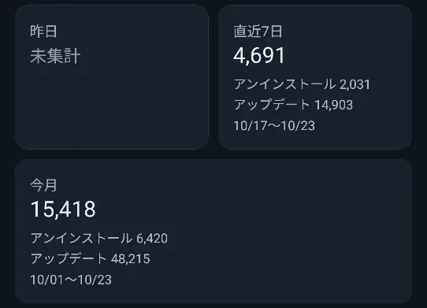
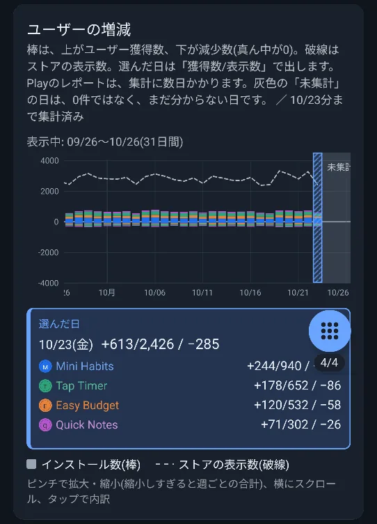
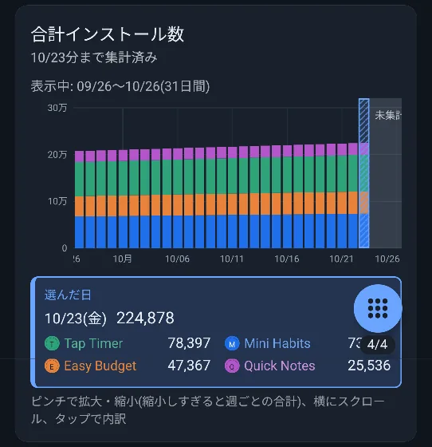
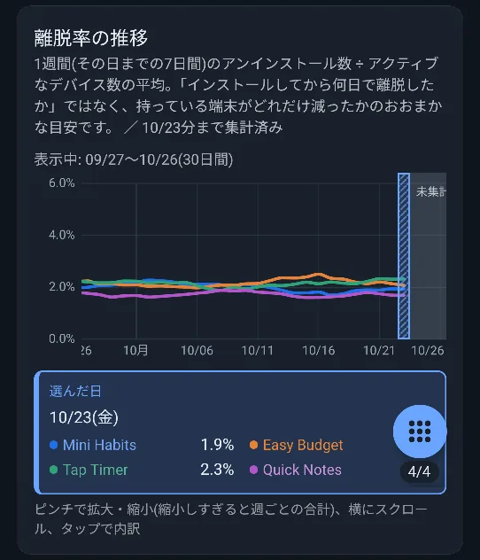
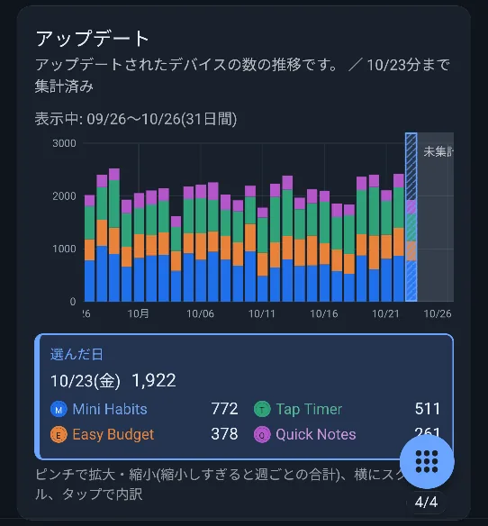
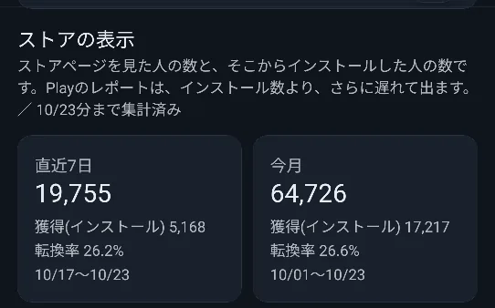
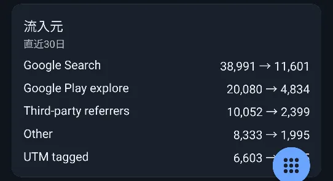
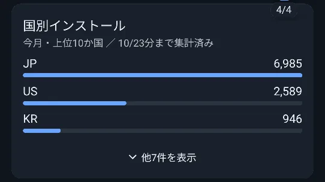
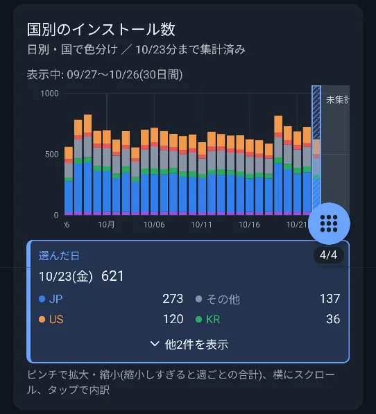
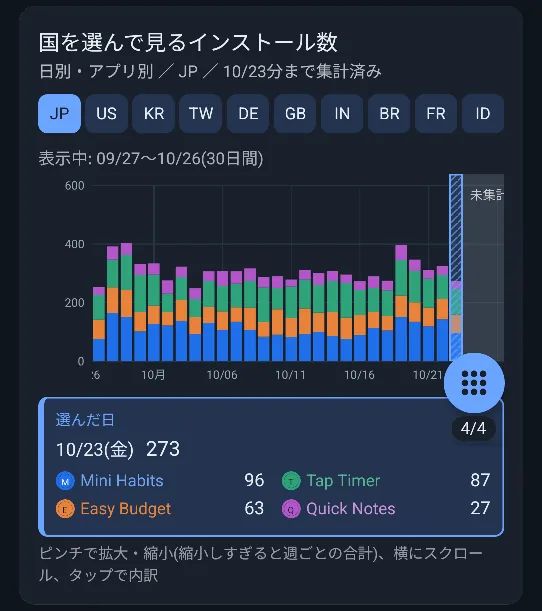

📖 はじめに（この画面でできること）
「インストール」タブは、Play Consoleのレポートをもとに、インストール・アンインストール・アップデートの数や、ストアページの表示、国別のインストール数を表示する画面です。
Play Consoleのアカウントでのログインと、レポートの保存先の登録が必要です（はじめての準備を参照）。
🛠️ 詳しい使い方
昨日・直近7日・今月のインストール数
上部のカードに、期間ごとのインストール数・アンインストール数・アップデート数が出ます。
- Playのレポートは数日遅れるため、昨日の分がまだ分からないときは、「昨日」のカードが「未集計」になります。
- 「直近7日」は、集計済みの最新の日までの7日間で、期間（例: 10/17〜10/23）が添えられます。
- 「今月」は、今月1日から集計済みの最新の日までです。

ユーザーの増減のグラフ
上向きの棒が獲得したユーザー数、下向きの棒が減少したユーザー数です（真ん中が0）。細い破線は、ストアページの表示数です。
選んだ日のボックスには、アプリごとに「+244/940 / −86」のように、「獲得数/ストアの表示数」と、その右に減少数が出ます。

合計インストール数
いま端末にアプリが入っている数の推移を、アプリごとの積み上げで表示します。

離脱率の推移
1週間（その日までの7日間）のアンインストール数 ÷ アクティブなデバイス数の平均を、折れ線グラフで表示します。

アップデートの推移
アップデートされたデバイスの数を、日ごとに表示します。新しいバージョンがどれくらい広がったかの目安になります。

ストアの表示（訪問者・獲得・転換率）と流入元
Google Playのストアページが見られた回数と、そこからインストールされた数を表示します。
- ストアページの訪問者と、獲得（インストール）、その割合の転換率を、「直近7日」と「今月」で表示します。
- 流入元では、直近30日の訪問者が、どこから来たか（Google Play 検索・Google Play のおすすめなど）を、「獲得 → 訪問者」の形で並べます。
- ストアの表示は、インストール数より、さらに遅れて出ます。


国別のインストール
国ごとのインストール数を、3つの形で見られます。
- 国別インストール: 今月の上位10か国をランキングで表示します。「他◯件を表示」で、残りも開けます。
- 国別のインストール数: 日別の積み上げグラフで、国ごとに色分けします。
- 国を選んで見るインストール数: 上のチップ（JP・US・KR…）で国を選ぶと、その国の日別のインストール数を、アプリ別の積み上げで表示します。



❓ よくある質問（FAQ）
Q 「未集計」とは何ですか？
Playのレポートは、集計に数日かかります。灰色の「未集計」の日は、0件ではなく、まだ数字が分からない日です。数日たつと、数字が入ります。
Q インストール数が表示されません。
Play Consoleのアカウントでのログインと、「レポートの保存先」の登録が必要です。はじめての準備をご確認ください。
Q 離脱率が表示されない日があります。
離脱率は、その日までの7日分のデータがそろっているときだけ表示します。7日分に満たない日は、点が打たれません。
Q 国別の数字が、合計と合いません。
国別の一覧は、今月分の上位10か国です。「他◯件を表示」で残りの国も確認できます。